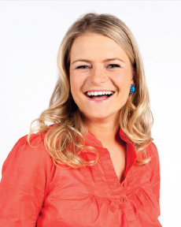

Harry has lived in Qatar, France, and London, as well as Sydney for a spell, and has been exposed to a colorful mix of cuisines and cultures. She loves making food from scratch and inventing new dishes. For the past seven years, she’s worked as both a food stylist and writer, with a flair for sourcing the most beautiful ingredients around and interpreting every recipe under the sun. She is also a co-host of the original, British hit version of Cook Yourself Thin.
Just to prove that appearances can be deceiving, Harry is into pink, sparkly earrings, all things pretty, and oh, butchery. That’s right, she loves to prepare meat from field to plate so she knows exactly where her dishes have come from and what’s gone into them. And forget fashion labels, Harry’s into food labels—the higher quality the ingredients, the better. But censoring her ingredients is as far as food restrictions go. Her philosophy is that if you crave something, it usually means your body (and soul) deserves it. She genuinely considers chocolate to be good for the soul and feels that it completes a meal the way a period completes a sentence.
It’ll come as no surprise, then, that Harry most definitely does not believe in restrictive diets. Food, she says, has been the joyful background to her life and learning to cook is the best weight-loss tool there is.